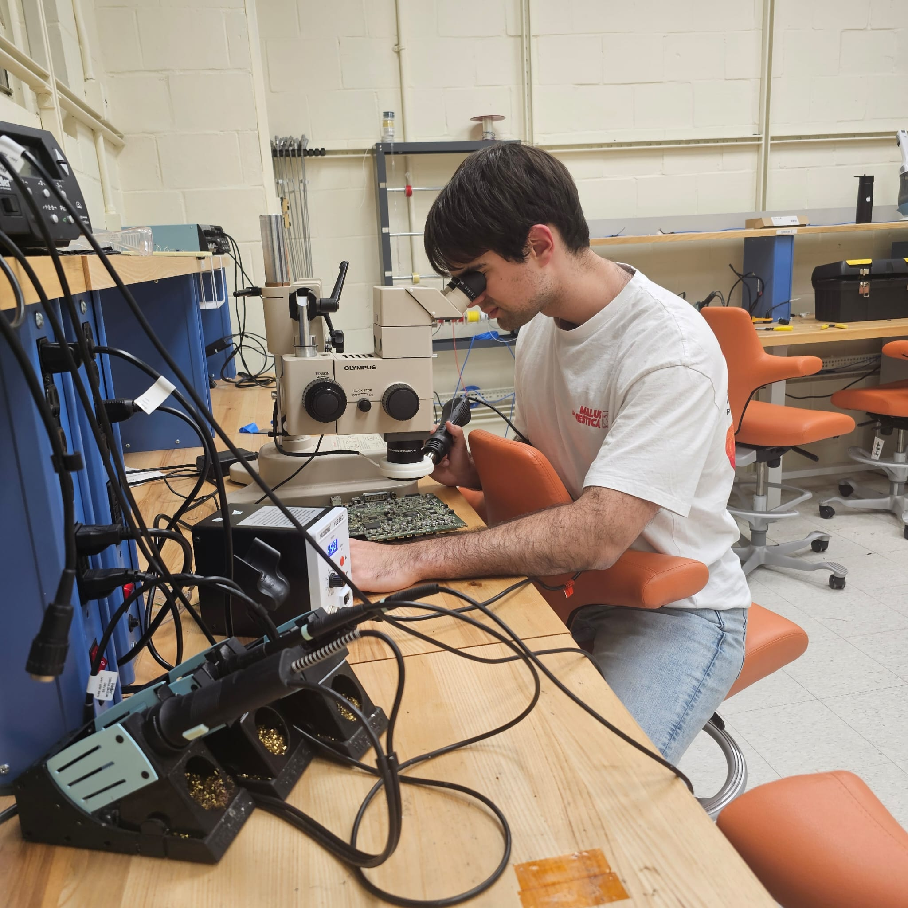

Welcome to the Future Future
Hi, I'm Andres Torrubia, and I'm currently a junior studying at Duke from the Mediterranean, Spain. I'm a triple major in ECE, CS, and Math, and I also study physics in my spare time.
I am currently developing and researching what I believe is the future of electromagnetism with my friend Conrad Qu, advised by David R. Smith.
This summer I will be joining Atomic Semi to work on scatterometry, building off my work from last summer where I developed their ellipsometry software and mathematics, making it several orders of magnitude faster.
My journey started at the age of 16 (2020) with a nanodegree in deep learning. From there, I earned a silver medal in a Kaggle competition. I interned twice at Magnific, working on recommender systems and image generation. I built my own AlphaGo clone using deep learning.
Then in college, I made a rasterizer in C from scratch, an FPGA ray caster running on my own CPU, a tensor differentiation library built from scratch in C, and an attention kernel that runs almost 3x faster than flash attention for small sequence lengths. Then vibe coding came along which made me 100x more prolific so I decided I wanted to study electrical engineering since coding was solved. I learned PCB and CAD design. I developed an AM radio and a 110 W power supply featuring active PFC and an LLC resonant DC to DC converter. This year I also started the Duke Hacker Fab, where I am building a lithography stepping machine.
Feel free to reach out to me at andres.torrubiabustos@duke.edu or connect with me on GitHub | LinkedIn.